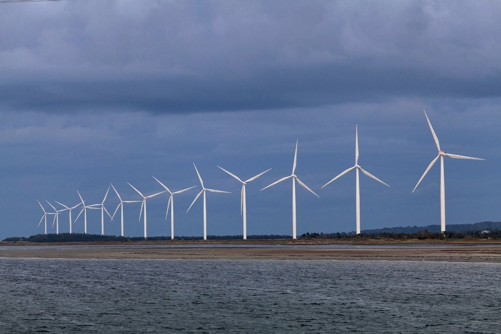
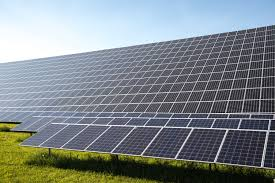

Hållbar energy för alla
BYGG UT OCH FÖRBÄTTRA INFRASTRUKTUREN FÖR ENERGI I UTVECKLINGSLÄNDERNA
Jag vill att du ska försöka föreställa dig hur det är att leva utan el. Det är tråkigt, för en sak - ingen tv, ingen MP3-spelare, inga videospel. Och det är ensamt och bortkopplat också - ingen dator, ingen Internet, ingen mobiltelefon. Du kan naturligtvis läsa böcker - men på natten har du inte ljus, annat än flimmer av ved. Och om den veden - du eller någon i din familj måste samla den under dagen, ta dig bort från mer produktivt arbete eller skolgång, och i vissa delar av världen, som utsätter dig för fara. Samma ved används för att laga middag, slänga av rök som kan göra luften inuti ditt hem mycket giftigare än det som andades i en industristad. Du kan sakna tillgång till vacciner och moderna droger eftersom närmaste sjukhus inte har regelbundna makt att hålla medicinen i kylskåp. Du är desperat dålig - och bristen på el bidrar till att du kommer att stanna så.
Det är livet för de 1,3 miljarder människor runt om i världen som saknar tillgång till nätet. Det är överväldigande ett problem för utvecklingsländerna och landsbygden. Mer än 95% av dem utan el finns antingen i Afrika söder om Sahara eller i Asien och 84% bor i landsbygden. Trots att det inte har blivit uppmärksamt på att globala problem som hiv / aids och malaria har uppnåtts under de senaste åren är bristande makt fortfarande ett stort hinder för alla framsteg i den globala utvecklingen.Infrastrukturinvesteringar är nödvändiga, men knappast tillräckliga för att utvecklingsländerna ska kunna omvandla sina ekonomier för att uppnå ett hållbart välstånd på grund av det Till 2030 vi vill bygga ut infrastrukturen och uppgradera tekniken för att leverera moderna och hållbara energitjänster till alla i utvecklingsländerna, i synnerhet de minst utvecklade länderna och små önationer under utveckling.
Någon slag av energi:
Vattenkraft
Vattenkraft använder sig av flytande vatten och omvandlar det till elenergi det kallas Vattenkraft och det gör det genom att använda en damm i flödande vatten som sparar det i behållaren som senare släpps ut i en turbin som roterar den som gör att en generator producerar elektricitet.

Vindkraft
Vindkraft är användningen av luftflöde genom vindkraftverk för att ge den mekaniska kraften att vrida elektriska generatorer.
Solkraft
Solkraftverk använder solstrålar för att producera el. Fotovoltaiska anläggningar är det vanligaste systemet för att omvandla solljus till el med hjälp av solceller. Fotovoltaiska solceller och växelriktare. När solljuset träffar solcellerna skapas en riktad ström (DC) i cellens kiselplattor, strömmen växlar till en växelriktare som omvandlar den till växelström (AC) med en spänning på 230v.
